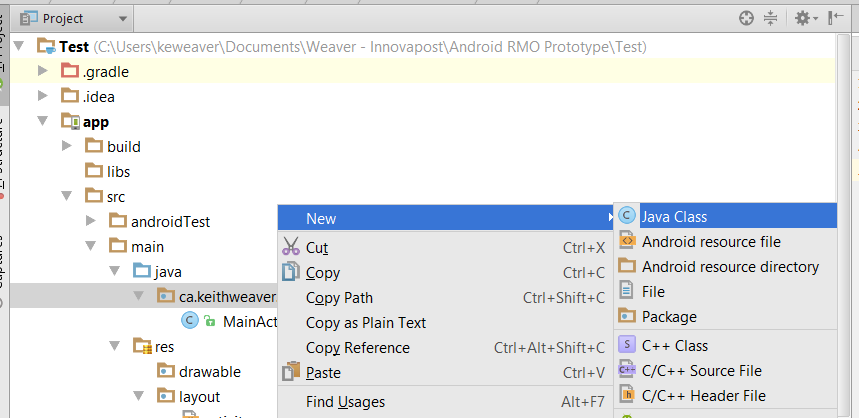

Please go star the repo https://github.com/kweaver00/Android-Samples
Find a spelling mistake or anything, file a bug with the page url, description and correction if you know it.
Created: March 15, 2016. Last updated: March 24, 2016
I have an actual introduction tutorial but if you want to just dive right into it look below.
This would be a very simple window, often Android Studio starts off with this window:
Insert image
In the actual coding side of the application there is a Activity file, a layout (XML) file and you are declaring it in your Android Manifest
public class MainActivity extends Activity { @Override protected void onCreate(S }}
xml exmaple @Override protected void onCreate(S }}
Snippet from Android Manifest @Override protected void onCreate(S }}
Here is the source code: https://github.com/kweaver00/Android-Samples/tree/master/Basics/Starting%20App
Here is a youtube tutorial, doing something very similar: Hello World! First app!
Why? Most apps are more than one window so in this second we are going to add a secondary window to the app we have above.
Like in the image above, right click on the folder with your package name and select "New > Java Class". Name it whatever, typically describing the window, followed by "Activity". Example: SecondActivity or LogInActivity. This should be in the same folder as your MainActivity.java and Android Studio should generate another window similar to the MainActivity.java. Make sure you have a onCreate method in side your new java class.
Now open your AndroidManifest.xml and add an activity tag referencing your activity below the existing one. Something like:
android manifest activity tags exmaple @Override protected void onCreate(S }}
We now have two windows, but window one gets launched on start up and window two never gets called. Add a button to window one's xml file, and give an id like mainBtn.
Xml file with single btn = id is mainBtn @Override protected void onCreate(S }}
We have to create an intent to move between the two windows in java. Open window one's java file (Probably MainActivity.java). It would look somthing like:
Start activity call @Override protected void onCreate(S }}
Now click the play button at the top, and see it work!
Here is a youtube tutorial, doing something very similar: Multiple window app
It doesn't take much more to pass information between windows, we are going to use "extras". They use a KEY/VALUE storage, value stored has a key to access it. Change your intent call to look something like this: They use a KEY/VALUE storage, value stored has a key to access it.
Start activity storing an extracall @Override protected void onCreate(S }}
How to retreive the extra on window two:
Start activity getting an extracall @Override protected void onCreate(S }}
Here is a youtube tutorial, doing something very similar: Multiple window app with Extras
What the heck is a toast? What a stupid name? They are the "popups" messages, below is photo:
Insert photo of toast
They are commonly used if you do not want to actual add a label. Example: Network error connection, you need to inform the user that they are having a network error but it may not be common. So you do not add a label but put in a Toast. Code looks like:
Toast.makeText(MainActivity.this, "Example Toast", Toast.LENGTH_SHORT).show();The MainActivity.this is the context, this may change to be view.getContext(); if you are using in a button for example. Cannot see the toast message? Did you forget the .show(); on the end? Very common mistake, wont throw an error, just will not show it.
Here is a youtube tutorial, doing something very similar: Toast messages
Logging is used for debugging usually. It allows you to write messages to the console. If you come from a pure Java background it is like System.out.println("Test"); but now it's Log.v(TAG, "Test");. What is the TAG? This is used usually to track where you are and it prints THE_TAG_MESSAGE > Test.
public class MainActivity extends Activity { public static final String TAG = "MainActivity_"; @Override protected void onCreate(S protected void onCreate(S protected void onCreate(S Log.v(TAG, "OnCreate was called"); }}
Here is a youtube tutorial, doing something very similar: Logging
Snackbar acts very similar to a toast but looks like this:
public class MainActivity extends Activity { public static final String TAG = "MainActivity_"; @Override protected void onCreate(S protected void onCreate(S protected void onCreate(S Log.v(TAG, "OnCreate was called"); }}